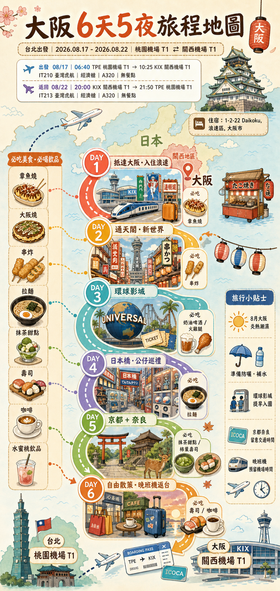
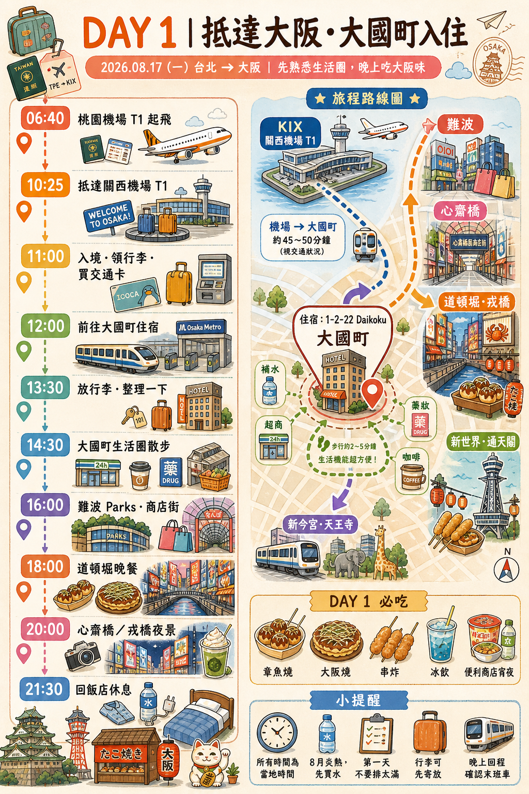

🌿旅行節奏
Day 1 不排太硬，先完成入境、進市區、寄放行李、難波與道頓堀夜遊。
Overview
行程以大阪大國町住宿為基地，前兩天適應大阪與前往天橋立，第三天環球影城，後面安排京都奈良、動漫公仔採買與返台前的市區散策。
Day 1 不排太硬，先完成入境、進市區、寄放行李、難波與道頓堀夜遊。
大件行李日優先少轉乘；USJ 可考慮清晨計程車；一日遊以 KKday 集合通知為準。
8 月大阪炎熱潮濕，每天準備水、防曬、帽子、小毛巾與行動電源。
票券、KKday、USJ、周遊卡與交通費都集中在費用表，購買前再確認即時價格。
Illustration Maps





Schedule
抵達 KIX 後入境領行李，搭南海或 JR 進大阪市區。先到大國町住宿寄放行李，下午難波/心齋橋，晚上道頓堀與水上觀光船。
建議用 KKday 一日遊，依集合通知前往日本橋、難波或梅田等指定地點。行程可能包含天橋立沙洲、View Land/傘松公園、伊根舟屋或美山。
主攻任天堂世界、咚奇剛、瑪利歐賽車與園區表演。交通可從大國町住宿步行到 JR 今宮，再到西九條轉 JR 夢咲線到環球城。
建議用 KKday 拼車或遊覽車一日遊，節省京都與奈良跨城市轉乘。常見景點：清水寺、二三年坂、伏見稻荷、奈良公園、東大寺周邊。
主攻黑門市場、日本橋電電街、模型公仔、扭蛋、二手店與新世界周邊，也可延伸到阿倍野 HARUKAS 看夜景。
上午退房寄放行李，可安排大阪城、難波補買伴手禮、藥妝或咖啡。20:00 KIX 起飛，建議 16:30-17:00 左右往機場移動。
Day 1 Detail
第一天以「抵達順利、行李負擔低、晚上不要太累」為核心。以下時間可依入境速度與孩子體力調整。
| 時間 | 安排 | 重點 |
|---|---|---|
| 04:30 | 桃園機場 T1 集合 | 虎航無餐點，先準備早餐；行動電源放手提。 |
| 06:40 | IT210 桃園起飛 | 所有抵達時間為日本當地時間。 |
| 10:25 | 抵達 KIX T1 | 入境、領行李、海關，抓 60-90 分鐘較保險。 |
| 11:45 | 關西機場 → 新今宮/難波 | 行李多可搭南海 Airport Express，再短程計程車到飯店。 |
| 13:00 | 大國町飯店寄放行李 | 正式入住若為 16:00，先寄放，不要原地等。 |
| 13:30 | 難波午餐 | 選有座位、翻桌快、孩子能接受的餐廳。 |
| 15:00 | 難波/心齋橋室內逛街 | 8 月炎熱，以百貨、地下街、商店街為主。 |
| 18:00 | 道頓堀拍照與晚餐 | 先完成戎橋、跑跑人拍照，再吃章魚燒/大阪燒。 |
| 19:00 | 道頓堀水上觀光船 | 提早兌票並確認最後班次。 |
| 21:00 | 回飯店休息 | 整理 Day 2 一日遊用品，早點睡。 |
Flight & Routes
2026/08/17 06:40 TPE 桃園機場 T1 起飛，10:25 KIX 關西機場 T1 抵達。臺灣虎航，經濟艙，A320，無餐點。
2026/08/22 20:00 KIX 關西機場 T1 起飛，21:50 TPE 桃園機場 T1 抵達。建議至少起飛前 3 小時抵達機場。
1 件手提行李 + 1 件個人隨身物品，合計 2 件總重不得超過 10kg；手提行李尺寸上限 54 × 38 × 23cm。
實際列車班次請以出發當天 Google Maps、JR、南海、Osaka Metro 官方資訊為準。
Before Landing
這趟是 2026/08 出發，日本旅客免稅制度仍屬「店內免稅」期間；2026/11/01 起才會改為出境確認後退款方式。
Money Log
以下為 2026/08/06 查詢參考價。KKday、USJ 與交通票券會浮動，購買前請再次確認結帳頁價格。
| 項目 | 參考價格 | 建議 | 備註 |
|---|---|---|---|
| KKday 天橋立一日遊 | TWD 1,278 - 1,933 起 | 建議先買 | 方案可能含伊根舟屋、美山、纜車或遊船；餐食/門票是否包含看方案。 |
| KKday 京都清水寺 + 奈良一日遊 | TWD 986 - 1,403 起 | 建議先買 | 常見景點為清水寺、伏見稻荷、奈良公園、東大寺；部分門票可能自理。 |
| USJ 1 日門票 | 官方 ¥8,900 起；KKday 約 TWD 1,934 起 | 一定先買 | USJ 採浮動票價；快速通關不含入場門票。 |
| 大阪周遊卡 | 官方 1 日 ¥3,500；2 日 ¥5,000 | 看 Day 5/6 景點決定 | 含大阪市內多種交通與部分景點；不含 JR 與機場交通。 |
| USJ + 大阪周遊卡粗估 | 約 TWD 2,638 起 | 分開買較清楚 | 若加購快速通關，價格會大幅提高。 |
| ICOCA / 交通儲值 | 先抓 ¥5,000 - ¥8,000 | 需要 | 市區、京都奈良補交通用；一日遊與 USJ 門票另計。 |
Card & Insurance
momo 卡屬富邦信用卡體系。2026 年富邦信用卡旅遊不便險條件為：使用同一張富邦信用卡刷付全額商用客機票款，或 80% 以上旅行社團費，才可享有旅遊不便險。
信用卡保障多半偏班機延誤、行李延誤/遺失等不便險，醫療、海外突發疾病、緊急救援、旅程取消與票券取消等可能不足。8 月高溫加上 USJ 與長距離一日遊，建議另外投保完整海外旅平險/不便險。
Checklist
護照、Visit Japan Web、機票、飯店地址、旅遊保險、信用卡客服電話。
eSIM/SIM、行動電源、充電線、離線地圖、KKday/USJ/交通票券截圖。
防曬、帽子、陽傘、小毛巾、補水鹽或電解質飲、好走鞋。
護照隨身、退稅收據集中、免稅消耗品不要拆、行李重量預留。
Merged Notes
這兩份檔案的重點已整理進 `index.html`；原檔仍保留，方便你之後要看單頁版或做備份。
已整合：住宿、航班、6 天架構、Day2 天橋立、Day3 USJ、Day4 京都奈良、Day5 公仔採買、Day6 返台安排。
已整合：04:30 機場、Airport Express、新今宮轉計程車、寄放行李、難波心齋橋、道頓堀遊船與起司蛋糕。
首頁目前引用原本 5 張核心插畫；你新增的中文檔名圖片仍保留在 `images` 裡，尚未刪除或覆蓋。
這份首頁適合本機雙擊查看，也可繼續推到私人 GitHub repo 當備份，不需要公開 Pages。
查詢日：2026/08/06。價格、班次與票券規定可能更新，購買前請再次確認。